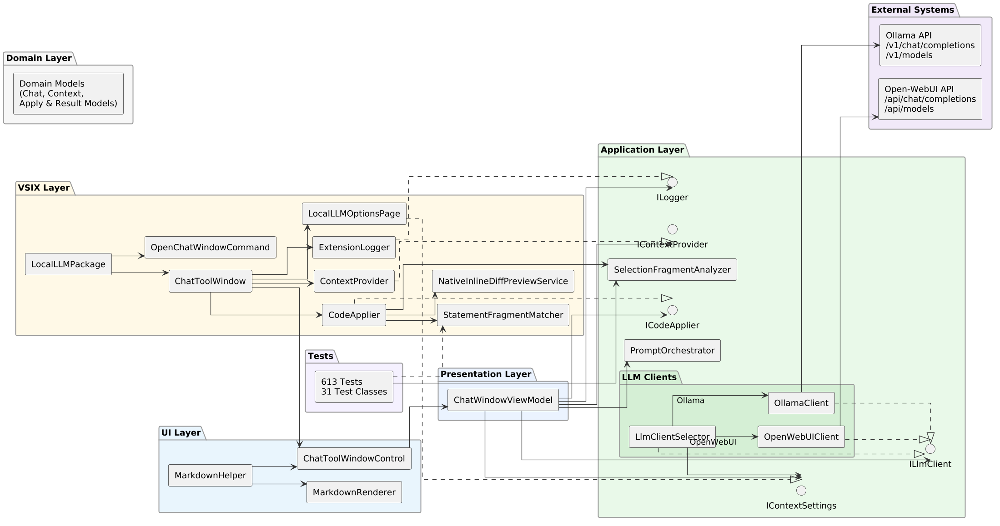
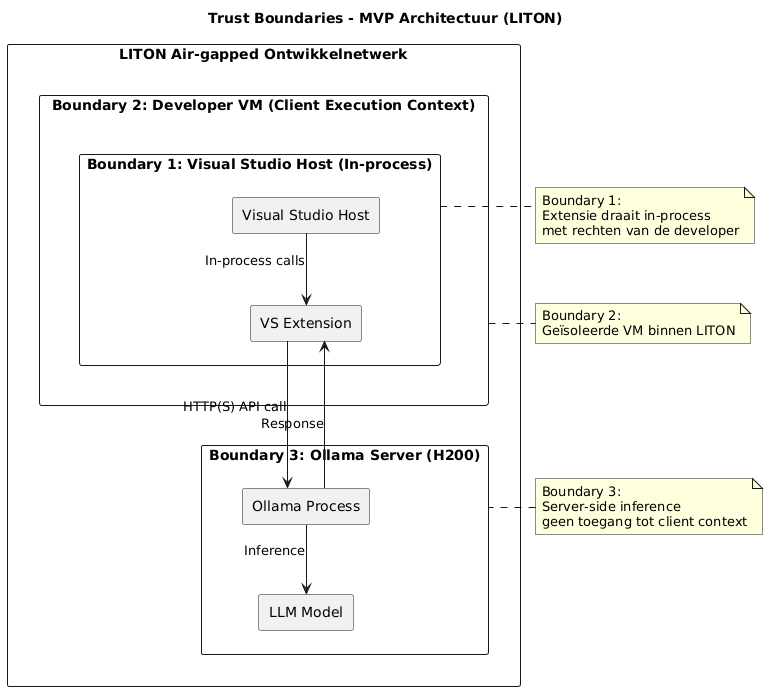

De MVP is een Visual Studio 2022-extensie die als gecontroleerde client communiceert met een lokaal of intern gehost LLM. De architectuur is gelaagd opgezet — Core, VSIX en Tests — zodat de kernlogica los van de Visual Studio-host testbaar blijft (OC-6). Twee visualisaties staan centraal: het componentdiagram (verantwoordelijkheden per laag) en de trust boundaries (waar de beveiligingsgrenzen lopen).
Componentdiagram — gelaagde verantwoordelijkheden
Domain · VSIX · Presentation · UI · Application (LLM Clients) · External Systems. De Core-laag heeft geen Visual Studio SDK-afhankelijkheden, waardoor de kernlogica buiten het VS-proces toetsbaar is.

Trust boundaries — scheiding van verantwoordelijkheden
Drie geneste grenzen binnen het air-gapped LITON-netwerk: de Visual Studio-host (in-process), de geïsoleerde developer-VM en de server-side LLM-inferentie zonder toegang tot clientcontext.

Belangrijkste ontwerpbeslissingen
Vier kernkeuzes uit het eindverslag (§6.5), elk herleidbaar naar een ontwerpcriterium.
- Afbakening netwerkcommunicatie — geen externe AI-dienst; communicatie met een lokaal of intern endpoint. De applicatie valideert het endpoint syntactisch; de feitelijke netwerkbeperking ligt in de infrastructuurlaag. OC-4
- Context & opslag — context-mode ceiling (Off / SelectionOnly / IncludeMethod / IncludeFile). Chatgeschiedenis blijft in geheugen; alleen niet-gevoelige configuratie wordt bewaard. OC-2 OC-5
- Scheiding van verantwoordelijkheden — Core, VSIX en Tests. LLM-communicatie via providerabstractie (Ollama, OpenWebUI, LM Studio via één clientpad). OC-6 OC-8
- Gebruikersregie — output als voorstel, nooit automatisch toegepast. Apply via inline diff of fallback-preview. Streaming en reasoning (v0.4) blijven binnen deze afbakening. OC-1 OC-9
Ontwerpcriteria zichtbaar in de code
De componentstructuur is een directe vertaling van de geconsolideerde ontwerpset (eindverslag §6.3).
- Human-in-the-loop (OC-1) — output als voorstel in ChatWindowViewModel / CodeApplier; geen auto-apply.
- Contextbeperking (OC-2) — ContextProvider met context-mode ceiling, default SelectionOnly.
- Modelstochasticiteit (OC-3) — vaste parameters in AppDefaults.
- Lokale verwerking (OC-4) — één gecontroleerd egress-pad via LlmClientBase.
- Geen opslag (OC-5) — PromptOrchestrator houdt historie in-memory.
- Scheiding (OC-6) — Core zonder VS-SDK-referenties; VSIX als dunne adapter.
- Foutbestendige communicatie (OC-8) — OpenAICompatibleClient / OpenWebUIClient via LlmClientSelector, met time-outs en foutafhandeling.